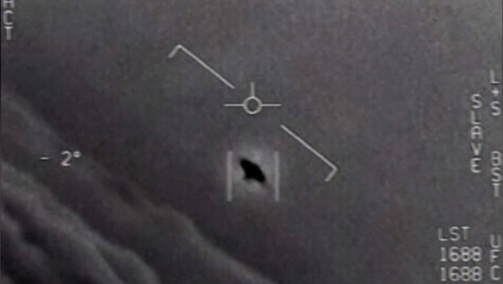

No ano de 1950, dois enigmas marcaram a cidade de Nova York nos Estados Unidos. O primeiro mistério envolvia um grande número de relatos sobre objetos desconhecidos voando nos céus do país. O segundo mistério se referia a uma série de desaparecimentos inexplicáveis e estranhos de latas de lixo na cidade. Durante esse período, ocorreram inúmeros furtos de latas de metal.
Alan Doom, um cartunista, imaginou uma solução para esses mistérios e a apresentou por meio de uma tirinha no jornal New York Times. Sua sugestão era que pequenos extraterrestres estavam vindo à Terra para roubar as latas de lixo. Embora fosse uma piada, essa tirinha provocou um efeito inesperado: deu início a um debate moderno sobre a existência de vida extraterrestre.
A tirinha de Alan Doom chegou ao laboratório de pesquisa nuclear de Los Alamos, Novo México, onde o físico Emil Konopinski a mostrou ao seu colega Enrico Fermi durante um almoço. Fermi, brincando, comentou que a ideia da tirinha era uma hipótese científica excelente, pois explicava ambos os mistérios. Esse comentário desencadeou uma conversa séria sobre a possibilidade de civilizações inteligentes e viagens intergalácticas.
Essa conversa evoluiu para outros assuntos mais cotidianos, mas Fermi permaneceu pensativo, até interromper a conversa com uma pergunta que se tornaria icônica: "Onde está todo mundo?" Os outros cientistas perceberam que Fermi estava continuando o tópico da vida extraterrestre. Fermi tinha o hábito de realizar estimativas complexas em sua mente, um exercício conhecido como "estimativa de Fermi." Nesse contexto, ele estimou quantas civilizações inteligentes poderiam existir em nossa galáxia.
Sua conclusão foi que, considerando a quantidade de civilizações que deveriam existir, era de se esperar que já tivéssemos detectado alguma. Essa pergunta formulou o Paradoxo de Fermi: se a vida é comum no universo, por que não vemos evidências dela? Esse paradoxo é interessante porque não tem uma resposta única, mas sim várias, cada uma fazendo sentido em cenários diferentes.
Uma resposta intrigante é considerar se somos a primeira ou uma das primeiras civilizações em nossa galáxia. Isso pode parecer uma ideia egocêntrica, mas alguém precisa ser o primeiro. O universo é antigo, com cerca de 13,7 bilhões de anos, mas ainda tem um futuro imenso pela frente. Se a evolução da vida inteligente requer circunstâncias específicas e tempo, é possível que estejamos entre as primeiras civilizações.
Há três cenários possíveis. No primeiro, a vida surge apenas em sistemas similares ao nosso, orbitando estrelas parecidas com o Sol. Mesmo que leve bilhões de anos para a vida inteligente emergir, estamos em uma fase inicial da história do universo. No segundo cenário, considera-se que estrelas como o Sol não sejam ideais para a vida, e outras estrelas, como as anãs vermelhas, sejam mais propícias. Nesse caso, estamos muito cedo na história do universo.
O terceiro cenário é que a vida em sistemas parecidos com o Sol seja rara, e o surgimento de vida inteligente leve ainda mais tempo. Nesse caso, seríamos uma das primeiras, ou até mesmo a primeira civilização do universo. No entanto, cada resposta gera novas questões e hipóteses sobre a solidão no cosmos. O Paradoxo de Fermi permanece um enigma em aberto, e futuras civilizações podem enfrentar desafios semelhantes ao nosso ao tentar responder à pergunta: "Onde está todo mundo?"
Saiba mais no vídeo a seguir: